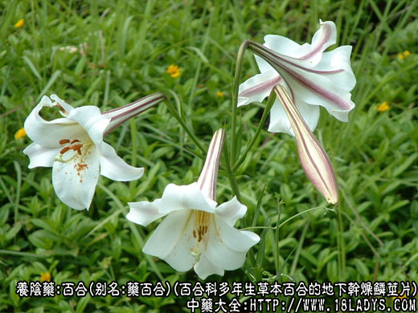
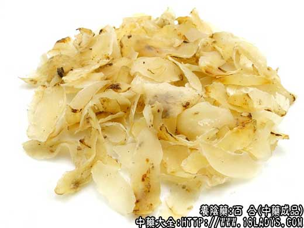
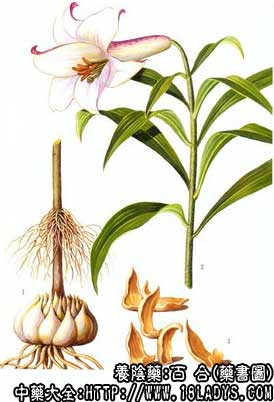

百合为常用中药。始载《神农本草经》，列为中品。
别名：药百合
来源：为百合科百合属多年生草本植物百合以及山丹等多种百合属植物的地下干燥鳞茎片。野生或栽培。
产地：主产于湖南、浙江、江苏、四川、安徽等地，其他各省亦有生产。
性状鉴别：本品呈长椭圆形或类三角形的瓢片状。背面外突，腹面凹入，中部较厚，边缘较薄呈波状弯曲并向内卷。一般长1.5～5厘米，宽0.5～2厘米，厚1～3毫米。全体乳白色至淡棕黄色，光洁细腻呈半透明状，有不甚明显的纵脉纹数条（维管束）。质坚硬而稍脆，断面略平坦而现颗粒状。气微，味微苦而稍粘。
以瓣片均匀，肉厚，色白，呈半透明状者为佳。
主要成分：含水解秋水仙硷、淀粉、蛋白质、脂肪。
药理作用：利尿清热、润燥止咳镇静。
炮制：生用或蜜制。
性味：入心、肺经。
功能：润肺止咳，清热，安神，利尿。
主治：劳咳咳血、虚烦惊悸，浮肿，小便不利等症。
临床应用：1、用于治疗干咳久咳，或肺热咳嗽恢复期，余热未尽，仍有咳嗽，用百合协助清热镇咳以善后。又治阴虚咳血，配养阴和凉血药，方如百合固金汤。
2、用于清心安神，治热病后余热未清，心悸、烦躁，夜间尤甚，小便短赤，取百合能利尿清热而安神，需配知母、生地、滑石、淡竹叶等。至于治一般心热烦躁。可用百合配莲子、龙眼肉等，水煎服。
用量：3～9g，量小无效。
处方举例：
百合固金汤（《医方集解》）：百合24g，生地9g，熟地9g，玄参15g，川贝母9g，桔梗9g，麦冬9g，白芍9g，当归9g，甘草6g，水煎服。
注：
1、百合属植物众多，有山丹、细叶百合、卷丹、麝香百合等，均能作百合药用。既有栽培也有野生，分布遍及全国各地。
2、家百合主产浙江，原植物为百合属卷丹的鳞茎瓣。商品瓣片大小均匀，颜色较白或淡黄白色，苦味较淡，多供食用，亦供药用。
3、野百合主产湖南，商品瓣片大小不一，生鲜时鳞茎有白有棕，经水煮硫磺熏制后，仍有白色和棕黄色等不同色泽，苦味淡重不一，习惯认为疗效较高，故多作药用。